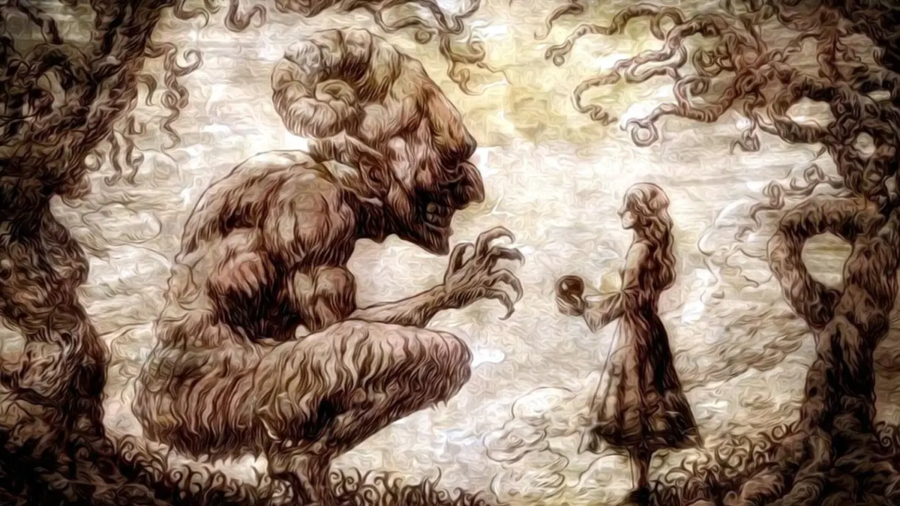
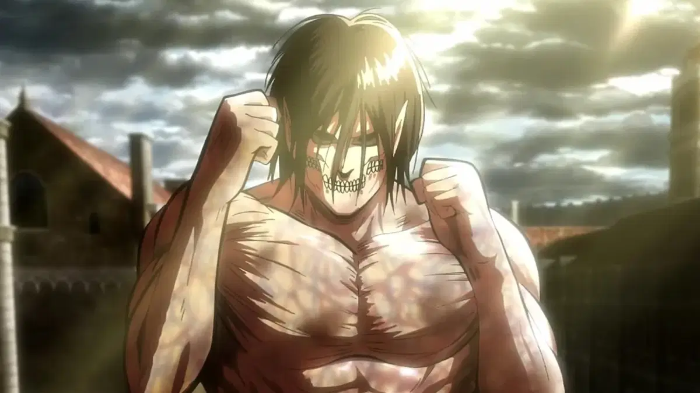
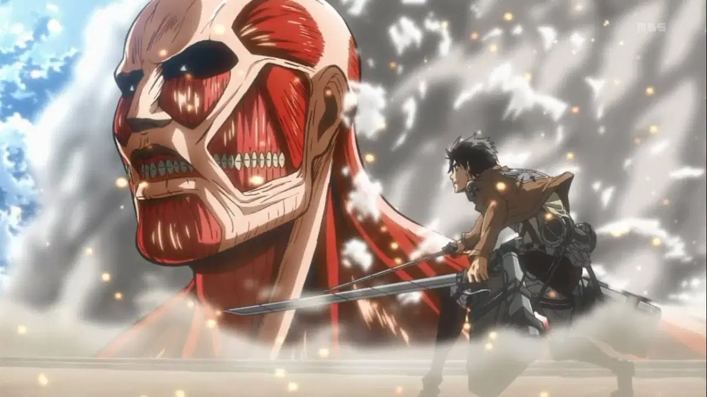
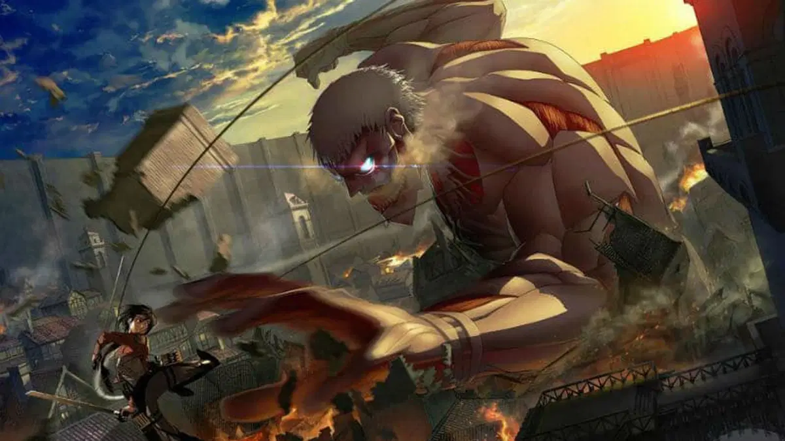
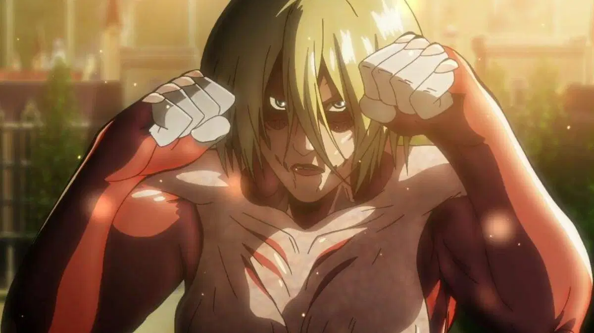
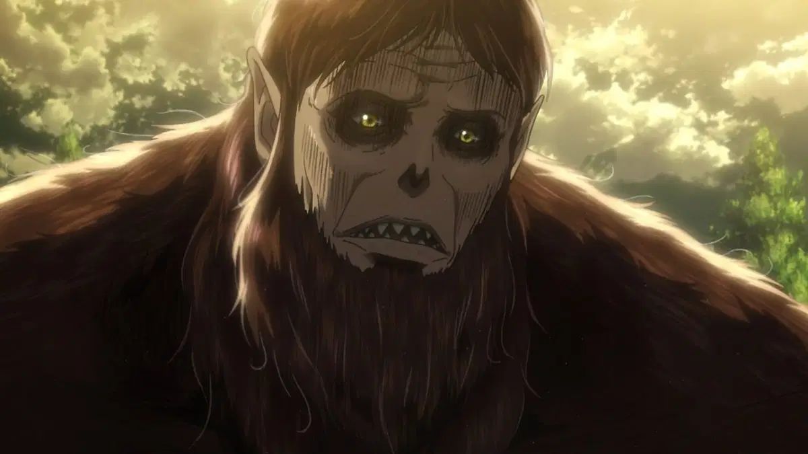
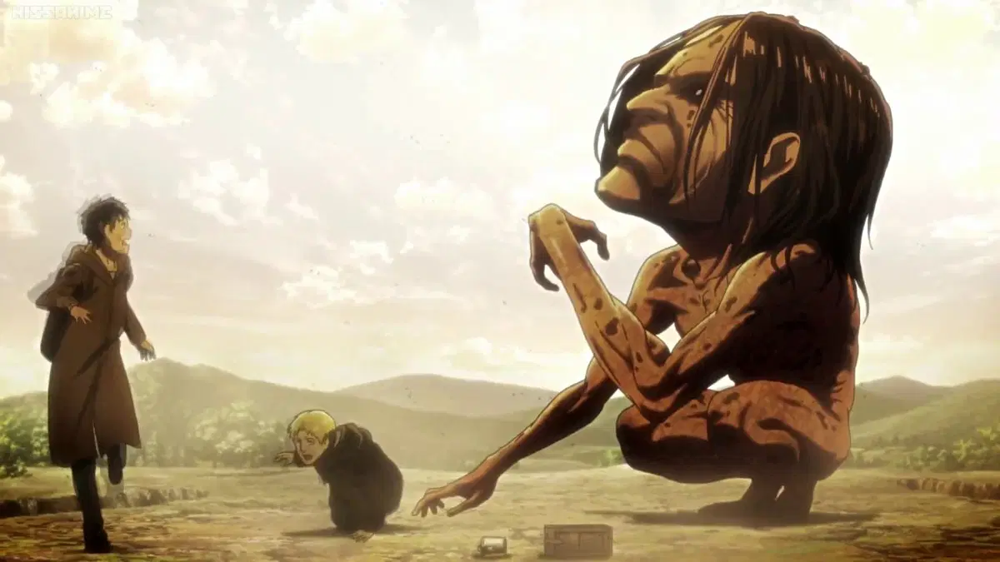
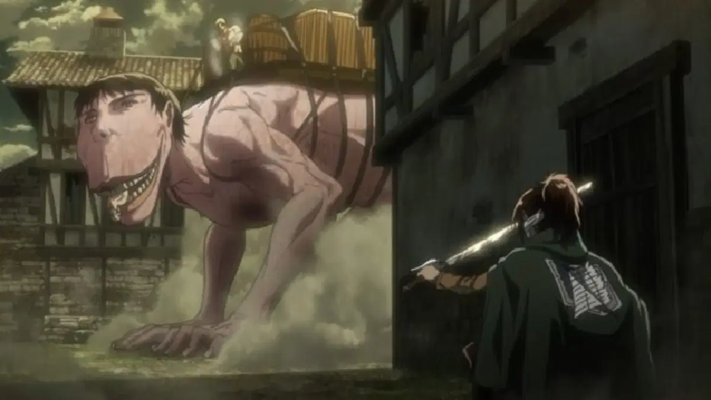
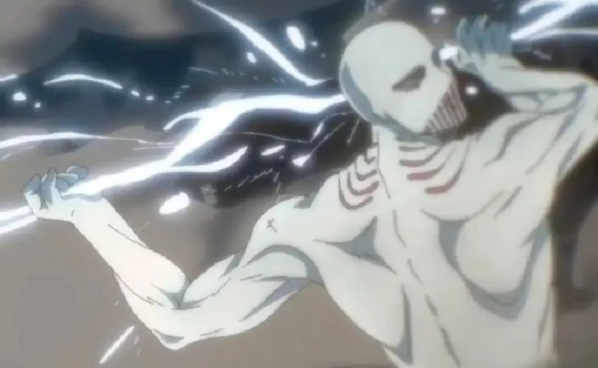

Titanes de attack on titan
Los que aún no han visto Ataque a los Titanes (Shingeki no Kyojin) se hacen la misma pregunta: ¿Quiénes son los 9 titanes y sus portadores? Sería difícil de explicar
sin hacer ningún spoiler porque la historia de Ataque a los Titanes es bastante más profunda de lo que puede parecer en un principio.
La humanidad que ha sobrevivido ha levantado grandes muros para evitar el ataque de los titanes, pero nadie es capaz de contar el origen de estos. Así que el espectador
siente la necesidad de seguir cada episodio y descubrir junto a los protagonistas cuáles son los 9 titanes de Shingeki no Kyojin.
Titanes cambiantes
Los 9 titanes de Ataque a los Titanes
1. Titán Fundador
2. Titán de Ataque
3. Titán Colosal
4. Titán Acorazado
5. Titán Hembra
6. Titán Bestia
7. Titán Mandíbula
8. Titán Carguero
9. Titán Martillo de Guerra
Titán Fundador
Se trata del titán más poderoso de todos ya que puede crear titanes puros y controlar todas sus acciones. Ymir Fritz se convirtió en el primer Titán Fundador, así que este poder sólo puede ser heredado por los individuos que pertenezcan al linaje real de Eldia, los Fritz o los Reiss. Sin embargo, cualquier otra persona puede conseguir este poder al entrar en contacto con una persona de sangre real.
El protagonista Eren Jaeger es el actual portador del Titán Fundador que lo consiguió tras devorar a su padre Grisha Jaeger.

Titán de Ataque
Tras la Gran Guerra de los Titanes, el país de Marley consiguió a 7 de los 9 titanes. Uno de los que se resistió fue el Titán de Ataque que siempre ha luchado por la libertad de Eldia. El primer portador conocido fue Eren Kruger. Este salva a Grisha Jaeger en la frontera de Paradis y sale del titán para terminar su vida después de 13 años. Kruger le pide a Grisha que consiga el poder del Titán Fundador para salvar a la humanidad, así que
este tiene que devorar a Kruger para conseguir el poder del Titán de Ataque que a su vez lo heredaría Eren Jaeger cuando devora a su padre.

Titán Colosal
El Titán Colosal se reconoce muy fácilmente por su aspecto y fue uno de los primeros titanes en aparecer en la serie. Es el más grande y fuerte físicamente, aunque también es lento. Como habilidad única, es capaz de expulsar grandes cantidades de vapor caliente por todo su cuerpo sin necesidad de recibir daño. Esto es útil en combate, pero también conlleva la pérdida de masa muscular como se ha podido ver en el anime. No se conocen
los primeros portadores del Titán Colosal, pero uno de los reclutas del Cuerpo de Exploración escondió su identidad desde el principio.

Titán Acorazado
Como su propio nombre indica, el Titán Acorazado destaca por la dureza de su piel, extremadamente gruesa. Por esa razón, tanto el Titán Colosal como el Acorazado se consideran tan letales. Es muy difícil atravesar su piel con una espada o una bala de cañón, pero además destaca por su velocidad mejorada. Sin embargo, un mayor volumen le limita los movimientos y es capaz de desprenderse de partes de su armadura para correr mucho más rápido.
El único portador que se conoce es Reiner Braun, otro de los miembros del Cuerpo de Exploración que no se separa de Bertolt Hoover.

Titán Hembra
El primer encuentro con el Titán Hembra dejó muchas evidencias sobre quién podría estar detrás de ese gigante. Todas las pistas apuntaban a Annie Leonhart y poco después se confirmó. Aunque los titanes no son capaces de comunicarse con los humanos, el Titán Hembra demostró que puede atraer a los demás titanes por medio de un grito
. Así consiguió escapar de la emboscada del Cuerpo de Exploración y no es el único recurso que la hace tan fuerte.

Titán Bestia
Todos los titanes tienen un aspecto singular, en especial el Titán Bestia. El portador de este poder tiene una gran fuerza física y es capaz de convertir a los seres humanos en titanes. Zeke Jaeger, hijo de Grisha y Dina Fritz, tiene este poder heredado del científico Tom Xaver del que no se sabe mucho más. Zeke lleva siempre las gafas que pertenecieron a Xaver pese a que no le hacen falta. A diferencia de otros titanes,
el Titán Bestia tiene aspecto de animal peludo como si fuera un gorila gigante y la capacidad de hablar el lenguaje humano con fluidez.

Titán Mandíbula
En la serie anime se han visto varios Titanes Mandíbula, aunque quizás el más popular sea Ymir. El aspecto de esta criatura es bastante desproporcionado, pero sus fortalezas son una poderosa mandíbula y las garras. El primer portador conocido es Marcel Galliard que colaboró en la guerra de expansión territorial de Marley, donde fue utilizado como un arma militar. Antes de atacar la isla de Paradis, Marcel evitó que un
titán cogiera a Reiner Braun, sacrificándose él. Este titán era una niña eldiana llamada Ymir y se infiltró en las murallas para sobrevivir.

Titán Carguero
Quizás sea uno de los titanes más desconocidos porque no tiene especial relevancia en la trama de la serie. Eso no quiere decir que no sea peligroso, ya que todos los titanes son utilizados como un arma de guerra desde hace siglos. El Titán Carguero tiene la habilidad de transformarse en un titán cuadrúpedo resistente para transportar cargas muy pesadas. Esto podría suponer un handicap para su velocidad, pero
sigue siendo sorprendentemente ágil. Sólo se conoce a un portador que se llama Pieck Finger, una joven al servicio del gobierno de Marley.

Titán Martillo de Guerra
Si hablamos de este titán, es necesario hablar de la familia Tybur. Es un clan bastante influyente que tiene el poder del Titán Martillo de Guerra, pero es más raro verlos en acción. Los Tybur permanecieron completamente neutrales al conflicto, aunque en el año 854 Willy Tibur entró en combate contra Eren Jaeger, a quien consideran una gran amenaza para la paz de los eldianos. Tybur no acepta su condición y odia su propia sangre, pero
le declara la guerra a Paradis. Instantes después es sorprendido por Eren transformado en titán y lo mata.

Entra para escuchar a eren yager
vuelve a la anterior pagina.